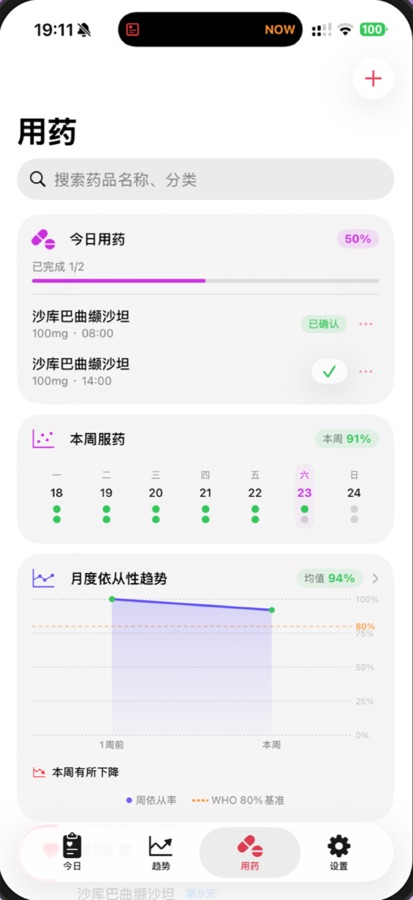
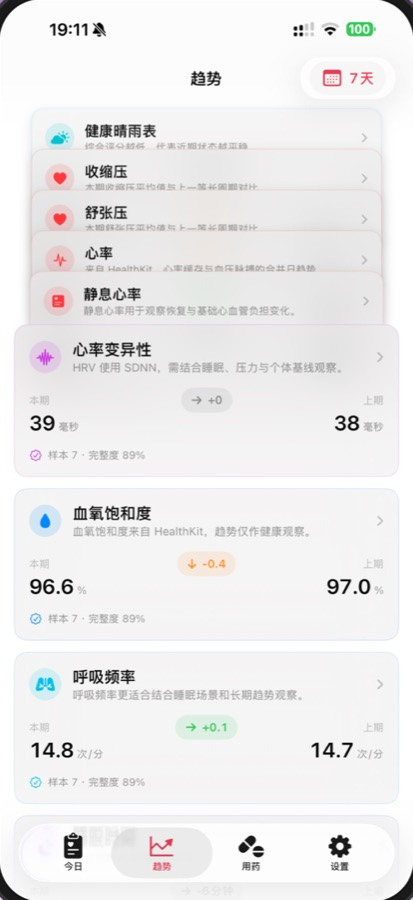

心脉助手HeartWave
iPhone · iOS 17+
记录血压、脉搏和服药，并把近期变化留在这台 iPhone 上。Record blood pressure, pulse, and medication, and keep the recent changes on this iPhone.
在 App Store 下载Download on the App Store
仅供个人健康管理参考，不是医疗设备。趋势、评分和报告不提供诊断、治疗或用药调整建议。For personal reference only. HeartWave is not a medical device. Trends, scores, and reports do not diagnose, treat, or suggest medication changes.


录入、提醒与导出Entry, reminders, and export
- 录入Entry
- 血压和脉搏可以手动输入，也可以拍照识别血压计上的数字，或用语音说出读数。Enter blood pressure and pulse by hand, from a photo of the monitor, or by speaking the reading.
- 提醒Reminders
- 按处方记下药名、规格、频次和提醒时间。通知、小组件和实时活动默认不显示药名和剂量，可以在提醒设置里打开。Plans store the name, strength, schedule, and reminder time. Notifications, widgets, and Live Activities hide the name and dose until you turn that on.
- Apple 健康Apple Health
- 授权后可以读取血压、心率、睡眠和活动。写回 Apple 健康默认关闭，只有你单独打开后才会请求。After you allow it, HeartWave can read blood pressure, heart rate, sleep, and activity. Writing back to Apple Health stays off until you enable it.
- 档案Profiles
- 可以为不同的家庭成员建立各自的档案，记录分开保存。Each family member can have a separate profile, with records kept apart.
- 导出Export
- 可以导出 CSV 或 PDF，用来整理自己的记录，并在就医时沟通。Export a CSV or PDF when you want a copy of your records for a clinic visit.
- 本机On device
- 健康记录保存在这台 iPhone 上，不会上传到我们的服务器。应用不接入广告或统计跟踪。Health records stay on this iPhone and are not uploaded to our servers. The app has no ads or analytics tracking.